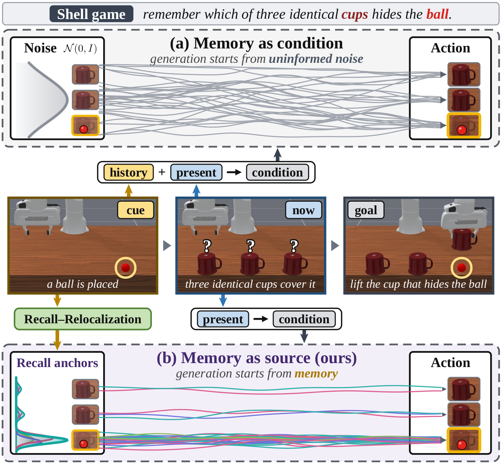
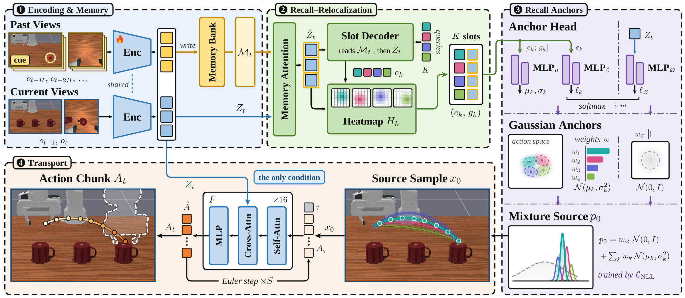
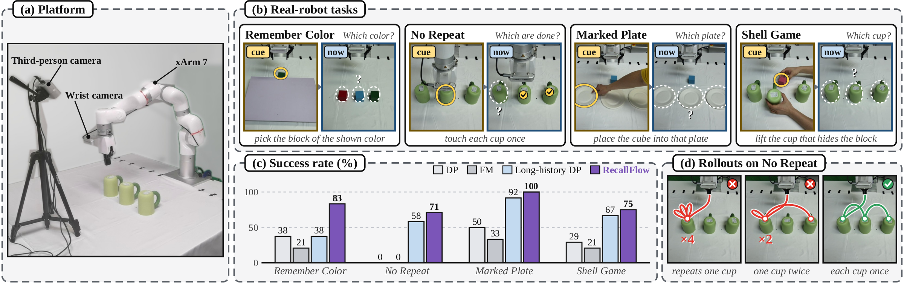
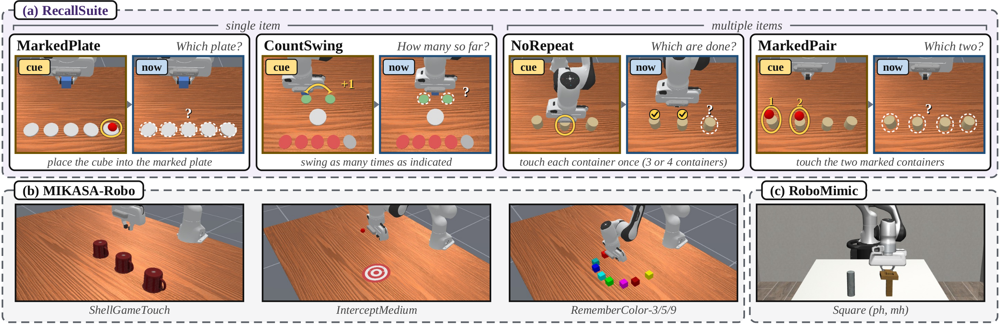

University of Science and Technology of China
†Corresponding author
TL;DRRecallFlow builds the source distribution of a flow policy from episodic memory, so that action generation starts at the remembered target instead of from Gaussian noise. It sets a new SOTA on the public MIKASA-Robo memory benchmark, with an average success rate of 80.4 ± 1.1% over three seeds.
Diffusion and flow-matching policies have become a standard choice for visuomotor imitation learning, owing to their ability to model multimodal action distributions. In memory-dependent manipulation, the robot must act on information that is no longer visible. Existing methods feed the observation history to the policy as an additional condition, while action generation still starts from Gaussian noise. However, the policy must then pick out the relevant target from a long and redundant history, leading to spurious correlations and unreliable decisions as the memory load grows. Additionally, the initial noise carries no information about what the robot has seen, leaving generation without guidance toward the remembered target. To address these issues, we propose RecallFlow, a flow-policy framework that builds the source distribution from episodic memory. Recall-Relocalization relates the memory to the current view through a few recall slots, so that the source reflects where the remembered targets are now. Recall Anchors then turns each slot into a Gaussian component of the source, enabling generation to start close to the intended action instead of from noise. The transport network then completes the action from the current observation alone, keeping inference nearly as cheap as a memoryless policy. We further build a suite of memory-dependent tasks grouped by memory load and compare all policies under a matched protocol. Extensive experiments show that RecallFlow achieves a state-of-the-art average success rate of 80.4% on the public MIKASA-Robo memory benchmark, and outperforms the strongest baseline by 20.3 points on our suite and by 18.8 points on four real-robot tasks.


Pick a decision in a NoRepeat episode and move the slider through the generation steps. RecallFlow's samples head to an untouched container from the source on, whereas long-history DP starts from noise and commits only in its last generation steps. Averaged over the 15 decisions, 99.6% of RecallFlow's source samples already head to an untouched container, against 4.0% for long-history DP, so RecallFlow keeps its success rate even with a single generation step.
Each line is one of 30 sampled action chunks (gripper path) at the selected step; the dot marks where it ends. Gold ✓: container already touched.
This interactive figure needs JavaScript.
We deploy the policies on an xArm 7 with a parallel gripper, a wrist camera, and a third-person camera, and design four tasks that differ in what must be remembered. Each policy is evaluated in 24 trials per task, with the operator unaware of which policy is running. Over all 96 trials, RecallFlow succeeds in 82.3%, ahead of long-history DP (63.5%), DP (29.2%), and FM (18.8%).

Without memory, DP keeps touching the same cup. Long-history DP returns to a cup it has already touched. RecallFlow touches each cup once.
1touched once 2touched again 0never touched. Touch counts are marked by hand from the videos. Speed: DP 4×, the others 3×.
The cue is red in both trials. Long-history DP picks the green block; RecallFlow picks the red one. Two different trials, 4× speed.
Long-history DP puts the cube on a plate the person did not set down; RecallFlow chooses the right plate. Two different trials, 4× speed.
Long-history DP lifts a cup with nothing under it; RecallFlow lifts the cup that hides the cube. Two different trials, 4× speed.
The policies generate their motions rather than choose among scripted trajectories. Without memory, the flow policy can even stall between two candidates: in Remember Color it stops between two blocks, and in Shell Game it comes down between two cups.
We evaluate on RecallSuite, our suite of five memory-dependent tasks grouped by memory load, on the public MIKASA-Robo memory benchmark, and on RoboMimic, where memory is not needed. On RecallSuite, RecallFlow outperforms the strongest baseline by 20.3 points on average (84.6% vs. 64.3%), with the largest margins where several items must be remembered.

| Single item | Multiple items | |||||
|---|---|---|---|---|---|---|
| Method | MarkedPlate | CountSwing | NoRepeat | NoRepeat-4 | MarkedPair | Avg. |
| Chance | 20.0 | 11.7 | 22.2 | 9.4 | 16.7 | 16.0 |
| Memoryless | ||||||
| DP | 17.3 | 10.0 | 1.3 | 0.0 | 1.3 | 6.0 |
| FM | 16.0 | 6.3 | 13.3 | 2.3 | 0.0 | 7.6 |
| History-conditioned | ||||||
| Medium-history DP | 100.0 | 10.3 | 31.7 | 1.7 | 4.7 | 29.7 |
| Long-history DP | 100.0 | 99.0 | 70.7 | 15.0 | 36.7 | 64.3 |
| Memory as source | ||||||
| RecallFlow | 95.7 | 98.3 | 97.0 | 64.7 | 67.3 | 84.6 |
Success rate (%) on RecallSuite (Table 1 of the paper), averaged over three training seeds; the framed columns are the tasks of this tab. Best in bold, second best underlined.
| Single item | Multiple items | |||||
|---|---|---|---|---|---|---|
| Method | MarkedPlate | CountSwing | NoRepeat | NoRepeat-4 | MarkedPair | Avg. |
| Chance | 20.0 | 11.7 | 22.2 | 9.4 | 16.7 | 16.0 |
| Memoryless | ||||||
| DP | 17.3 | 10.0 | 1.3 | 0.0 | 1.3 | 6.0 |
| FM | 16.0 | 6.3 | 13.3 | 2.3 | 0.0 | 7.6 |
| History-conditioned | ||||||
| Medium-history DP | 100.0 | 10.3 | 31.7 | 1.7 | 4.7 | 29.7 |
| Long-history DP | 100.0 | 99.0 | 70.7 | 15.0 | 36.7 | 64.3 |
| Memory as source | ||||||
| RecallFlow | 95.7 | 98.3 | 97.0 | 64.7 | 67.3 | 84.6 |
Success rate (%) on RecallSuite (Table 1 of the paper), averaged over three training seeds; the framed columns are the tasks of this tab. Best in bold, second best underlined.
| Method | SGT | IM | RC3 | RC5 | RC9 | Avg. |
|---|---|---|---|---|---|---|
| Octo-small | 46 | 39 | 45 | 17 | 11 | 31.6 |
| OpenVLA‡ | 47 | 14 | 59 | 16 | 6 | 28.4 |
| π0 | 33 | 42 | 35 | 22 | 15 | 29.4 |
| SpatialVLA | 23 | 27 | 27 | 17 | 11 | 21.0 |
| CronusVLA | 32 | 5 | 31 | 13 | 9 | 18.0 |
| MemoryVLA | 88 | 24 | 44 | 30 | 20 | 41.2 |
| GMP | 98 | 83 | 80 | 61 | 17 | 67.8 |
| SimpleMemVLA* | 99 | 83 | 71 | 58 | 59 | 74.0 |
| Chameleon | 96.7 | 58.9 | 94.4 | 72.2 | 53.3 | 75.1 |
| RecallFlow | 100.0 | 87.3 | 100.0 | 78.3 | 36.3 | 80.4 |
Success rate (%) on ShellGameTouch (SGT), InterceptMedium (IM), and RememberColor with 3, 5, and 9 colors (RC3–RC9). Results of other methods are as reported in prior work (sources in Table 2 of the paper). *Available only on arXiv. ‡OpenVLA-OFT in MemoryVLA.
| Method | Square ph | Square mh | Avg. |
|---|---|---|---|
| DP | 98.0 | 73.3 | 85.7 |
| FM | 97.0 | 75.3 | 86.2 |
| Long-history DP† | 86 | 69 | 77.5 |
| RecallFlow | 94.0 | 84.0 | 89.0 |
Success rate (%) on Square with proficient (ph) and multi-human (mh) demonstrations, averaged over three seeds. †Reported in the GMP paper. Median latency per action chunk: 153.7 ms for RecallFlow against 152.6 ms for FM (one RTX 4090, batch size 1).
This video has sound: it opens with music. Please check your volume before playing.
Narrated overview with subtitles (2:27, with sound).
@article{zhang2026recallflow,
title = {RecallFlow: Episodic Memory as the Source Distribution of Generative Robot Policies},
author = {Zhang, Xuji and Zhong, Qilin and Zhang, Zichen and Zhai, Wei and Di, Jian and Li, Kun and Cao, Yang and Lv, Wenjun},
journal = {arXiv preprint arXiv:2611.23731},
year = {2026}
}